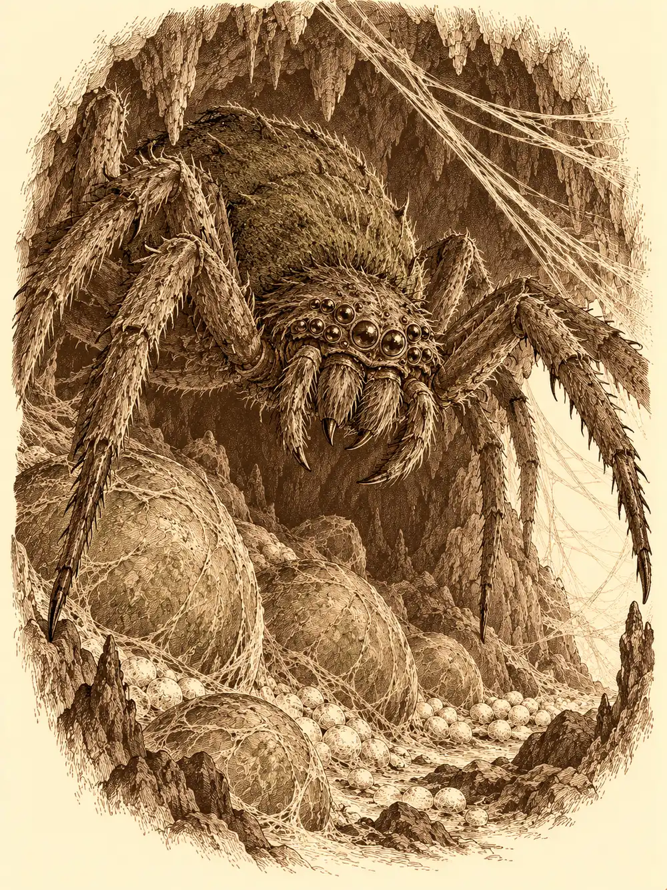

Capítulo 38
Un lío pegajoso
Libro III · La boda del shogun
Shiru había vuelto a llenar la bolsa de pan y se le notaba en la manera de andar. Sentado a la mesa de la base, con una barra recién comprada a cada lado, parecía otro cervan distinto del que había cruzado el bosque contando migas.
La calma de aquellos días tenía algo de convalecencia. Erk seguía entrenando a Koi para que aprendiera a dominar su fuego. Maroxi había copiado en su libro los dos pergaminos que le habían caído en suerte, uno de rapidez y otro para ver en la oscuridad, y seguía con sus noches de práctica con el inugami. Sun se había marchado a su templo. Sirth ayudaba a Jin con el papeleo del shogun y, en los ratos que le quedaban, volvía a una pequeña obsesión: el frasco de líquido negro que había sacado del dragón del bosque. Había preguntado a alquimistas en Sho y en Ukio, y nadie había sabido decirle qué era.
Hubo un momento de tensión cuando Guxi, que también andaba por la base, le reclamó a Maroxi el papel con la firma del shogun. El cambiante se defendió con las manos en alto: había mirado la firma, sí, pero el papel lo había devuelto a su sitio. No se había llevado nada. Shiru, por si acaso, aconsejó no meter las manos en los bolsillos de un funcionario.
Sirth enseñó el frasco a Maroxi, por si él reconocía aquella sustancia como la sangre demoníaca de las ruedas que había llevado a Asami. Maroxi negó con la cabeza. Era otra cosa.
Después Sirth se puso a echarlos de casa con mucha educación, porque tenía trabajo, y salieron a la calle con Shizuka subida a los hombros de Shiru y agarrada a sus cuernos.
Al pasar por delante de la tienda del alquimista, Sirth se detuvo en seco. Dentro había un hombre hablando de suministros con el dueño, y a Sirth le costó un momento ponerle sitio en la memoria. Luego lo tuvo: era el desconocido que habían visto en el bosque después de matar al dragón. Se acercó como quien hace cola y escuchó. No decía nada importante. Le tocó el hombro.
"Disculpe. ¿Nos conocemos?".
"Eres uno de los cazadores, ¿verdad?". El hombre sonrió. "Tengo un trabajo para vosotros, si queréis aceptarlo. Pero este no es sitio para hablarlo".
En la taberna de Kitaro les explicó el encargo. Tenía una cueva cerca, que usaba de almacén, y en ella se había instalado una araña muy grande con sus crías.
"¿Se os da bien matar a una madre con sus hijos?".
Pagaba doscientas monedas a cada uno si dejaban la cueva limpia. Alguien intentó subir el precio a doscientas cincuenta y el hombre se levantó despacio, recogiendo sus cosas: había oído que en una ciudad cercana unos cazadores nuevos les estaban haciendo la competencia, y no le costaba nada ir a buscarlos. Shiru, que pensaba en el dinero que no podría llevar a Zia y a su casa si se les escapaba el trabajo, cortó la discusión.
"Os doy veinte de mi parte a cada uno. Aceptamos".
El hombre les dio un mapa y señaló la cueva. Erk dijo que las arañas también se comían, aunque no estaban tan buenas como los grillos, y Sirth se estremeció de pies a cabeza.
Antes de salir pasaron a cobrar lo de Haru. El pescador tenía puerta nueva: madera reforzada con chapas de metal y un sello mágico en el centro. Maroxi lo examinó de cerca. El que había hecho aquel encantamiento lo había firmado con una letra, una G.
"Ya sé de quién es", dijo.
Haru les dio veinticinco monedas de la pesca. Al lado, la casa de juego de la dueña del burdel tenía exactamente la misma puerta. Ella los atendió con una frialdad que no le conocían, sobre todo con Maroxi, y sus compañeros le recordaron entre risas la noche en que la mujer lo había invitado a dormir y él se había ido a entrenar con un mago.
Tomaron los caballos que les había regalado el shogun y llegaron a la cueva en unas cuantas horas menos de las que les habría costado a pie.
La entrada estaba cubierta de telarañas, pero no como las de una araña común. Eran duras, tirantes, casi rígidas, y entre sus hebras había piedras diminutas o filamentos que costaba cortar incluso con una daga. Maroxi les acercó una llama. Prendieron mal, poco, y con un brillo verde que ninguno había visto antes en un fuego.
Sirth se puso pálido.
"Me habíais dicho que eran pequeñas".
"Nadie habló del tamaño".
Sirth entró detrás de Erk.
Al poco de adentrarse, algo frío y espeso le cayó a Shiru en la cabeza. Se sacudió con asco. Del techo goteaba un líquido negro, viscoso, que todos reconocieron enseguida: era lo mismo que Sirth llevaba en su frasco, lo que había salido del dragón. Maroxi vació en el suelo la poción para hablar con animales que llevaba encima y llenó el frasco con aquella sustancia.
Más adentro encontraron una puerta de madera, encajada en la roca. Detrás había huevos. Unos pequeños, blancos; otros enormes, verdes, del tamaño de una tinaja, que latían despacio como corazones. Erk se acercó a uno para mirarlo.
Desde el techo bajó la madre.
La araña era enorme, con el pelaje de un verde sucio en el lomo y demasiados ojos. Shiru reaccionó como reaccionaba siempre: levantó uno de los huevos grandes y se lo estrelló encima. Falló, el huevo reventó contra el suelo y de entre la cáscara salió arrastrándose una araña más pequeña, viva y furiosa. El cervan la engañó para que mordiera a su madre y luego se lanzó él mismo contra la grande. A la segunda la agarró, la levantó y la derribó.
Sirth la debilitaba desde la puerta con magia, sin acercarse más de lo imprescindible. Erk soltó una flecha que atravesó a la araña pequeña y siguió hasta la madre. Maroxi conjuró una bola de fuego sobre dos huevos y la araña, y la cueva se llenó de un olor a pelo quemado y a algo dulzón que se cocía dentro de las cáscaras.
"Así me gusta. Con fuego o con filo".

La voz sonó a sus espaldas. Era el hombre que los había contratado, de pie en la entrada como si llevara un rato mirando. Sacó un frasco amarillo y se lo arrojó a Shiru, que estaba malherido; el líquido le empapó la cabeza y le cerró las heridas.
"Si los rompéis a golpes, nacen las crías. Si los quemáis o los cortáis, mueren dentro, y cada huevo que muere le hace daño a la madre. Seguid así o moriréis".
Sacó una silla plegable, se sentó y abrió una bolsa de palomitas.
Sirth no se fiaba de él. Lo señaló con la mano y murmuró un conjuro para dejarlo paralizado en la silla. El hombre ni siquiera dejó de masticar. Sirth volvió a la pelea y se ocupó de mantener a Shiru en pie.
Maroxi se bebió una poción de rapidez y de pronto se movía el doble: pinchaba los huevos con la punta del arma, una, dos veces, y cada pinchazo los dejaba más quietos. Shiru mantenía a la madre contra el suelo, agarrada, aunque algo en el aire lo había vuelto lento, como si se moviera bajo el agua. Erk disparaba sin parar. Sirth hizo aparecer un arma espiritual que golpeaba sola y tocaba los huevos con dedos que los pudrían por dentro. Maroxi, con la espada de sombras, iba vaciando el nido. Con cada huevo que moría, la madre se retorcía.
Quedaba uno. Sirth se acercó con cara de asco, levantó un dedo que brillaba de color morado y lo tocó. El huevo se convirtió en polvo, y alrededor todo perdió el color durante un instante.
La madre murió con él.
"¿Y no podías haberle hecho eso a la araña?", le preguntó alguien.
Sirth enseñó el dedo, con restos del huevo pegados, y se lo limpió en la pared.
El hombre se levantó de la silla, se sacudió las migas y le dio a Shizuka lo que le quedaba de palomitas.
"Buen trabajo".
Les pagó ochocientas monedas. Shiru cumplió su palabra: repartió doscientas veinte a cada uno de los otros tres y se quedó con lo que sobraba.
Luego el hombre se acercó al cadáver de la araña. De las heridas empezaba a salirle líquido negro.
"Pobre criatura. Un experimento fallido. Todavía me falta perfeccionarlo".
"¿La has hecho tú?".
"La he tomado prestada. Es lo que tiene ser un genio: puedes dominar hasta a las bestias más poderosas". Se volvió hacia ellos con una sonrisa amable. "Por cierto, Otakemaru os manda saludos. Está preparando un ejército para venir aquí, a por vosotros".
"¿Quién eres?".
"Me conocen como Stolos. Aunque quizá os interese más saber con quién trabajo. Soy el aliado principal de Otakemaru. A cambio de ciertos favores, le voy a ayudar a conquistar esta pequeña isla".
Sirth movió la mano para lanzarle un conjuro y no llegó a terminar el gesto. Una sombra había aparecido junto a él, una figura baja, completamente envuelta en una túnica con capucha, y le apoyaba en la garganta una cuchilla que no sostenía ninguna mano: le salía directamente del brazo.
"Yo que tú no haría eso".
Stolos siguió hablando con la misma calma. No le pagaban por matarlos, explicó, sino por entorpecerlos, y aquel juego iban a jugarlo muchas veces más. Les contó que el líquido era invención suya, que con él podía controlar y manipular cualquier ser vivo, y que él había devuelto a la vida al dragón del bosque. Que tenía dos mil años, y que a esa edad cuesta encontrar algo con que divertirse.
"Las cosas muertas deben permanecer muertas", dijo Sirth entre dientes, con la cuchilla en el cuello. "Así lo dicta mi dios".
"Entonces, si te mato ahora, ninguno de tus compañeros podrá traerte de vuelta".
Shizuka tiró de la manga de Shiru.
"Ese señor es bueno. Me ha dado palomitas".
Sirth la miró, miró la cuchilla, y bajó la mano despacio.
"Id a casa", dijo Stolos. "Habéis ganado dinero y habéis vencido a una gran criatura. ¿Qué más podéis pedir?".
"Un enemigo nuevo", murmuró alguien.
Les dejó llevarse lo que quisieran. Maroxi cortó un par de patas de la araña y se las echó al hombro. Shiru ató las seis que quedaban y lo que sobraba del cuerpo a un tronco con una cuerda y lo arrastró detrás, porque pensaba cocinarlo.
En el camino de vuelta, Maroxi estuvo un rato callado, repasando lo que había notado al tener cerca a Stolos. No había sido magia, o no la magia corriente. Le recordaba a un antiguo compañero que tenía un poder distinto, más de la mente que del arte, y al que llamaba energía psíquica.
Sirth y Erk desplegaron el mapa que les había dado Stolos para llegar a la cueva y lo compararon de memoria con el que tenían en casa. Hacia el norte no había nada nuevo. Hacia el sur, en la tierra quemada, había dos marcas que en su mapa no estaban: una decía Batallón Carmesí. La otra, solo un nombre a medio escribir, un puesto con una C.
"Habrá que vigilar eso", dijo Erk.
"Desde lejos", dijo Sirth.
En la base, Guxi había sacado de un cajón un fajo de papeles del grosor de un brazo y lo había dejado caer sobre la mesa.
"¿Qué creéis que llevo haciendo desde que estoy aquí?".
Era todo lo que había reunido sobre Otakemaru: el ataque a la aldea de los tanuki, lo de Mosto y lo de Ikari, los oni que mataban a los yokai que no se unían a él, el intento de secuestro de Shizuka. Erk y Maroxi se miraron. Llevaban más de dos meses en Kuroto y nadie les había contado aquella historia entera. Guxi los sentó a cada lado y empezó a ordenar las hojas delante de ellos, una por una.
Shizuka, mientras tanto, se quejaba de que el señor de las palomitas se había peleado con todos y ya no le había dado más. Guxi no la oyó. Y a nadie se le ocurrió contarle lo del frasco negro.
Shiru, fuera, había rebozado un trozo de araña en pan y lo había frito. Lo masticó con decisión, despacio, y su cara fue cambiando hasta que no quedó duda. Escupió, recogió el resto y fue a tirarlo lejos de la casa.
Muy al sur, más allá de las montañas, sobre la tierra negra donde nada crece, una llama verde que antes no estaba se encendió en la oscuridad.